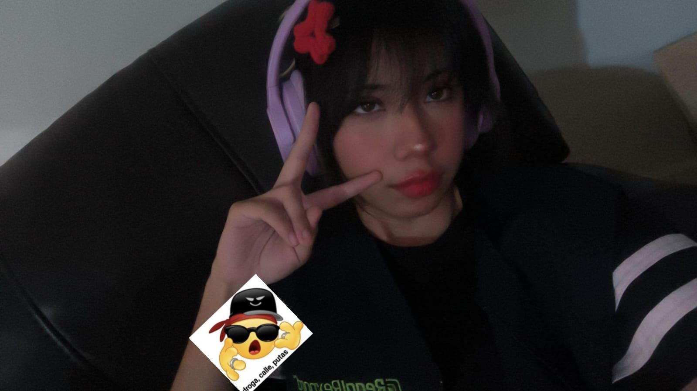
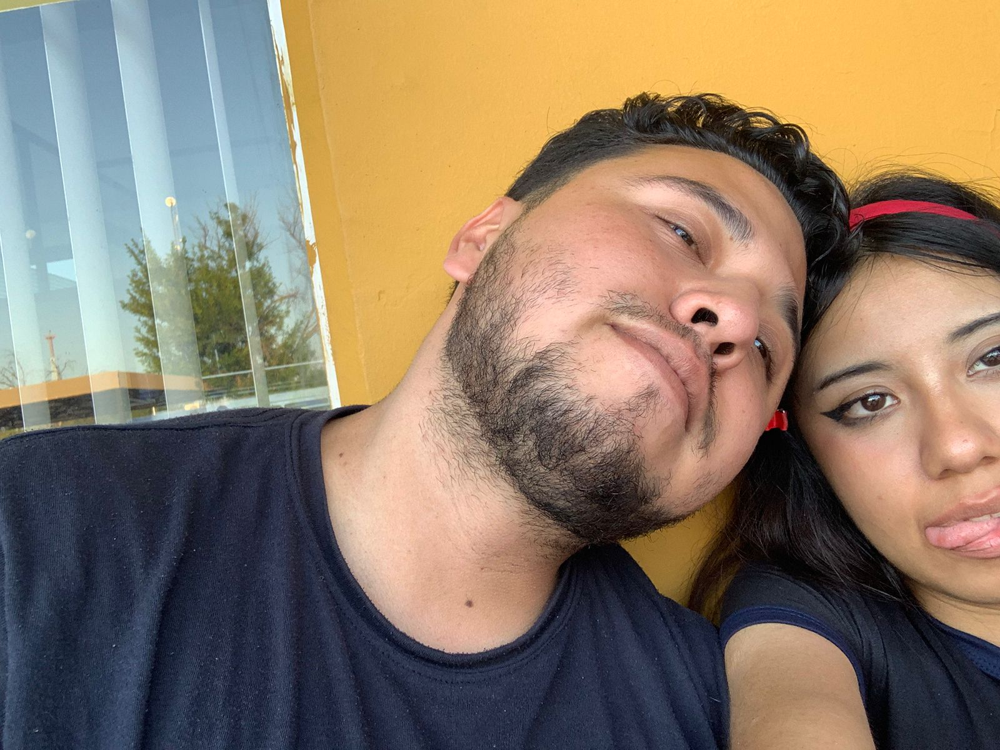
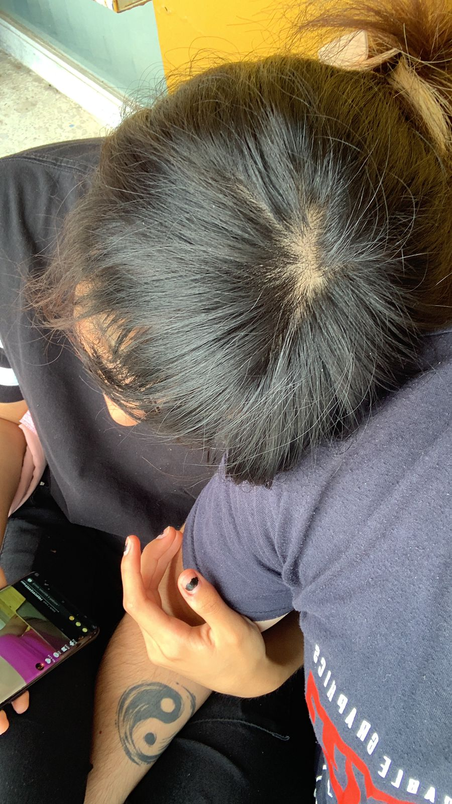
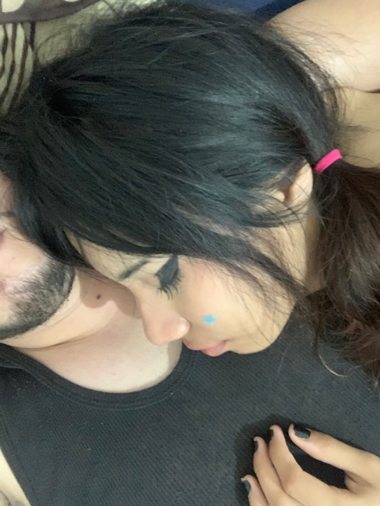

Reflexiones de un hombre perdidamente enamorado.

He estado pensando mucho últimamente, y el pasar del tiempo me ha hecho comprender algo con una claridad absoluta: mi amor te pertenece únicamente a ti. Con cada día que pasa, todo lo que siento se hace más fuerte y más firme. No importa cuánto gire el mundo, mi corazón ya encontró su lugar, y ese lugar es a tu lado.

Si pudieras verte a través de mis ojos, entenderías la enorme admiración que te tengo. Eres mi mayor orgullo. Ver la forma en la que le echas ganas a la vida, cómo enfrentas tus responsabilidades y la fuerza que tienes para salir adelante, me deja sin palabras. No solo te amo por lo dulce que eres conmigo, sino por la mujer tan trabajadora, valiente e increíble que eres todos los días.

Te juro que cada día que no paso contigo, te extraño más y más. Ahora que no podre verte a diario como antes, la distancia me pesa, pero al mismo tiempo me recuerda lo vital que eres en mi vida. Mi mente siempre te está buscando. Espero con un anhelo gigante cada momento, cada cita y cada instante en el que por fin puedo volver a tenerte frente a mí para abrazarte.

Todo esto que siento, la forma en la que te extraño y te admiro, me lleva a un solo pensamiento: mi mayor anhelo es tenerte conmigo, viviendo juntos. Sueño con el día en que ya no tengamos que despedirnos al final del día. Deseo con toda mi alma despertar a tu lado en nuestra propia casa, construir nuestro hogar y compartir cada amanecer y cada anochecer contigo. Eres mi futura esposa, y hacia allá vamos.